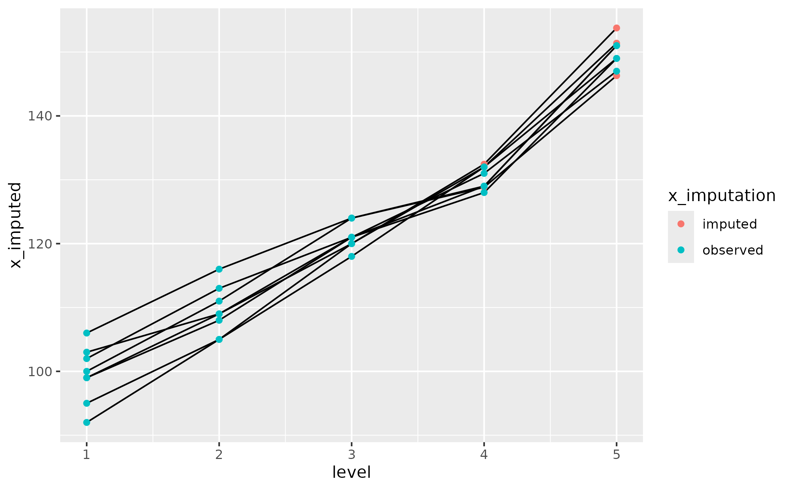

Impute missing data at different utterance lengths using successive linear models.
Usage
impute_values_by_length(
data,
var_y,
var_length,
id_cols = NULL,
include_max_length = FALSE,
data_train = NULL
)Arguments
- data
dataframe in which to impute missing value
- var_y
bare name of the response variable for imputation
- var_length
bare name of the length variable
- id_cols
a selection of variable names that uniquely identify each group of related observations. For example,
c(child_id, age_months).- include_max_length
whether to use the maximum length value as a predictor in the imputation models. Defaults to
FALSE.- data_train
(optional) dataframe used to train the imputation models. For example, we might have data from a reference group of children in
data_trainbut a clinical population indata. If omitted, the dataframe indatais used to train the models.data_traincan also be a function. In this case, it is applied to thedataargument in order to derive (filter) a subset of the data for training.
Value
a dataframe with the additional columns {var_y}_imputed (the
imputed value), .max_{var_length} with the highest value of var_length
with observed data, and {var_y}_imputation for labeling whether
observations were "imputed" or "observed".
Background
In Hustad and colleagues (2020), we modeled intelligibility data in young children's speech. Children would hear an utterance and then they would repeat it. The utterances started at 2 words in length, then increased to 3 words in length, and so on in batches of 10 sentences, all the way to 7 words in length. There was a problem, however: Not all of the children could produce utterances at every length. Specifically, if a child could not reliably produced 5 utterances of a given length length, the task was halted. So given the nature of the task, if a child had produced 5-word utterances, they also produced 2–4-word utterances as well.
The length of the utterance probably influenced the outcome variable: Longer utterances have more words that might help a listener understand the sentence, for example. Therefore, it did not seem appropriate to ignore the missing values. We used the following two-step procedure (see the Supplemental Materials for more detail):
Other notes
Remark about data and data_train: One might ask, why shouldn't some
children help train the data imputation models? Let's consider a
norm-referenced standardized testing scenario: We have a new participant
(observations in data), and we want to know how they compare to their age
peers (participants in data_train). By separating out data_train and
fixing it to a reference group, we can apply the same adjustment/imputation
procedure to all new participants.
References
Hustad, K. C., Mahr, T., Natzke, P. E. M., & Rathouz, P. J. (2020). Development of Speech Intelligibility Between 30 and 47 Months in Typically Developing Children: A Cross-Sectional Study of Growth. Journal of Speech, Language, and Hearing Research, 63(6), 1675–1687. https://doi.org/10.1044/2020_JSLHR-20-00008
Hustad, K. C., Mahr, T., Natzke, P. E. M., & J. Rathouz, P. (2020). Supplemental Material S1 (Hustad et al., 2020). ASHA journals. https://doi.org/10.23641/asha.12330956.v1
Examples
set.seed(1)
fake_data <- tibble::tibble(
child = c(
"a", "a", "a", "a", "a",
"b", "b", "b", "b", "b",
"c", "c", "c", "c", "c",
"e", "e", "e", "e", "e",
"f", "f", "f", "f", "f",
"g", "g", "g", "g", "g",
"h", "h", "h", "h", "h",
"i", "i", "i", "i", "i"
),
level = c(1:5, 1:5, 1:5, 1:5, 1:5, 1:5, 1:5, 1:5),
x = c(
c(100, 110, 120, 130, 150) + c(-8, -5, 0, NA, NA),
c(100, 110, 120, 130, 150) + c(6, 6, 4, NA, NA),
c(100, 110, 120, 130, 150) + c(-5, -5, -2, 2, NA),
c(100, 110, 120, 130, 150) + rbinom(5, 12, .5) - 6,
c(100, 110, 120, 130, 150) + rbinom(5, 12, .5) - 6,
c(100, 110, 120, 130, 150) + rbinom(5, 12, .5) - 6,
c(100, 110, 120, 130, 150) + rbinom(5, 12, .5) - 6,
c(100, 110, 120, 130, 150) + rbinom(5, 12, .5) - 6
)
)
data_imputed <- impute_values_by_length(
fake_data,
x,
level,
id_cols = c(child),
include_max_length = FALSE
)
if (requireNamespace("ggplot2")) {
library(ggplot2)
ggplot(data_imputed) +
aes(x = level, y = x_imputed) +
geom_line(aes(group = child)) +
geom_point(aes(color = x_imputation))
}
